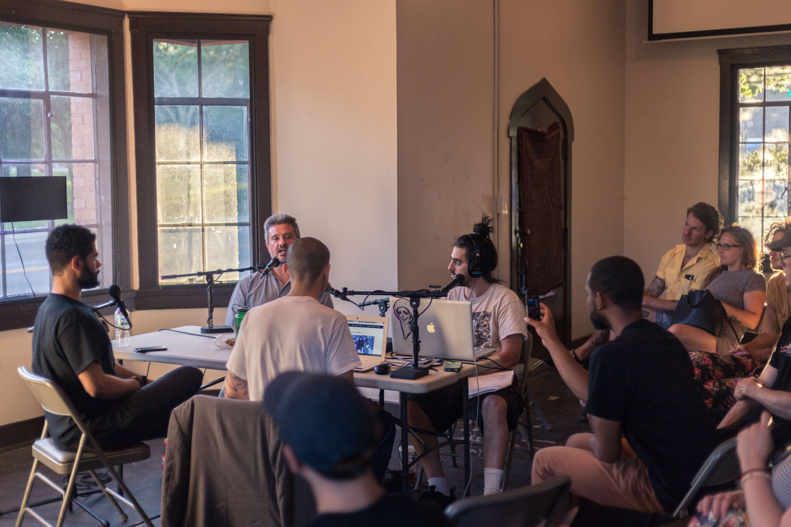

The doors flew open. Studio Mosaic was ready to set up shop. For this special 4 day series of events we welcomed everyone to join us in curated experiences exploring music, art, cross-cultural organizing, and community gardening at the Comfort Station in Logan Square, Chicago as a part of the P.O.W.E.R. Project.
Events included:
Through the P.O.W.E.R. Project, the Comfort Station transformed into an ‘empowerment hub’ with a series of lectures, discussions, happenings, self-care exercises, and an art exhibition led by artists and members from the surrounding communities. Through these engagements, people were able to not only set their own actions- they could also inspire others to take a stand against injustice and intolerance through reflection and discussion.
Here's what we did for our own scheduled participation in the project.

What About Chicago? is a weekly audio show/podcast exploring the cutting edge of live art, music and cultural performances going on in and around the great city of Chicago. Hosted by accomplished Musician/Raconteur Rahim "Rageing" Salaam and his mysterious Conscience. The live podcast session included special guest Leone Jose Bicchieri of Working Family Solidarity and Skylar Dunn-Lubin from Studio Mosaic.
As all eyes fall on America during our time of social, racial, gender, climate, and political dysfunction co-occurring alongside technological, medical, electric automobile, and renewable energy infrastructure innovation, we tend to ask ourselves where do we go next? What do we do now? And how do we reclaim our dignity in a nation mired by hate, intolerance, oppression, and rampant anti-social individualism?
As a potential inroad to addressing some of these hyper complex dynamics of our current times, 2-POC provided an example of an art exhibit featuring young, local chicago artists working in the meeting grounds of social identity, self expression, and solidarity. Having opened on the birthday of Tupac Shakur, the show looked to the iconic musician as an inspirational example of a single highly influential person of color who elegantly and skillfully navigated the turbulent waters between activism, authenticity, self-awareness, and artistic production.
The show sought to tackle these numerous issues in a way that was exploratory, real, personal, communal, and alive.
Featuring: Tatianna Howard, Thumy Phan, Kalya Jacobs, Erik Salgado, Jazmín Dua, Skylar Dunn-Lubin, Juls Mandal, Jacob Koch, Ray Bees, Abena Motaboli


Feelin' was both a live DJ set and accompanying zine that explored the origins and dynamics of Midwest House & Techno music. Founders Tim Dilich and Maxwell Stern hit the turntables as other Studio members danced with all the locals who showed up to "feel it" for themselves. In the zine we gave an overview of the roots of house music and its early connection to African-American and gay audiences in Chicago, Detroit, and beyond.
Til the Grid Turns Green looked deeper into the groups who are actively turning the infamous Chicago Grid "green." Studio Mosaic, Glad Matt, and Comfort Station P.O.W.E.R. Project showcased the landscape of Chicago’s urban farming community and agricultural sector and its ties to Chicago’s complex socioeconomics.
Studio Mosaic reached out to Glad Matt from Hostel Grow Op to bring together Chicago-based farmers and activists to create an afternoon of workshops and discussions exploring community gardening, sustainability, the food supply chain, backyard farming, the bartering economy, and what “local” actually means. After all was said, seen, and danced, we were thankful to sit back and learn about urban farming. It reminded us that as we grow as a collective we are committed to deepening both our art, our values, and our connections to everyone else doing inspiring things here on our shared planet earth.
Featured speakers: